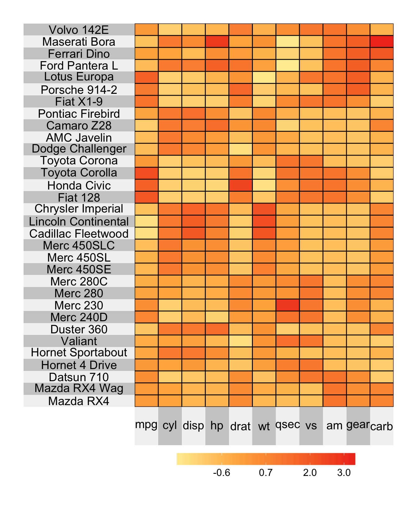
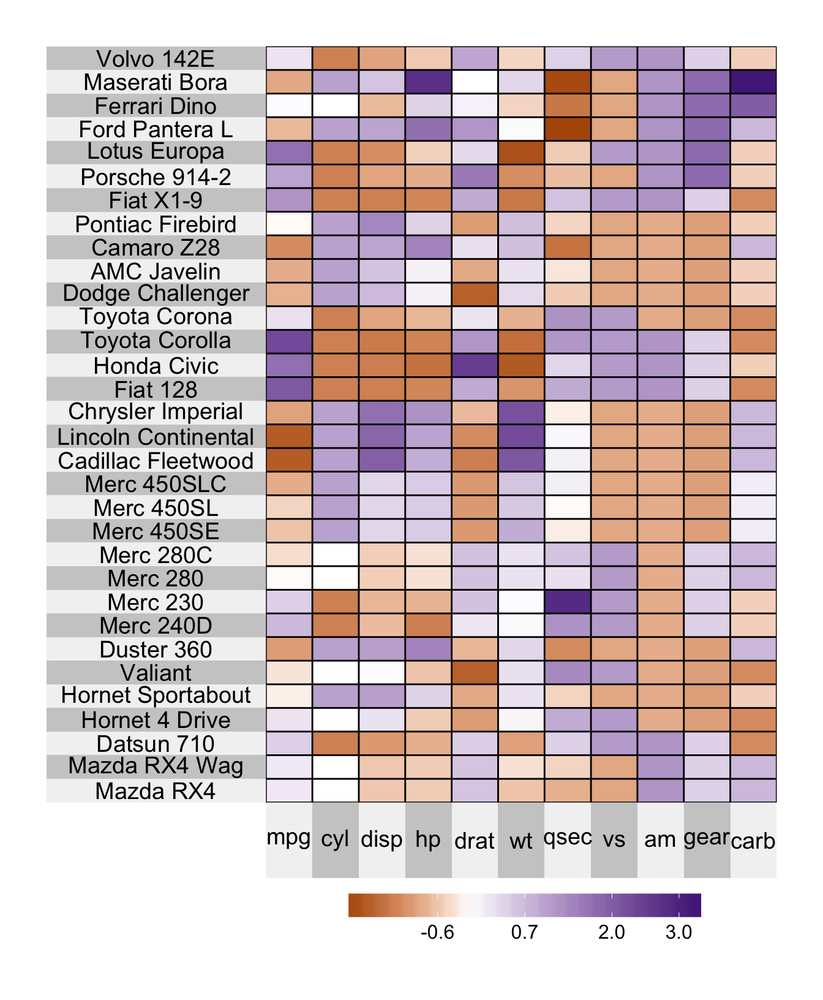
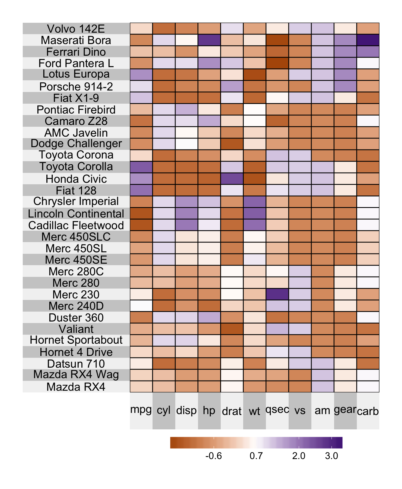
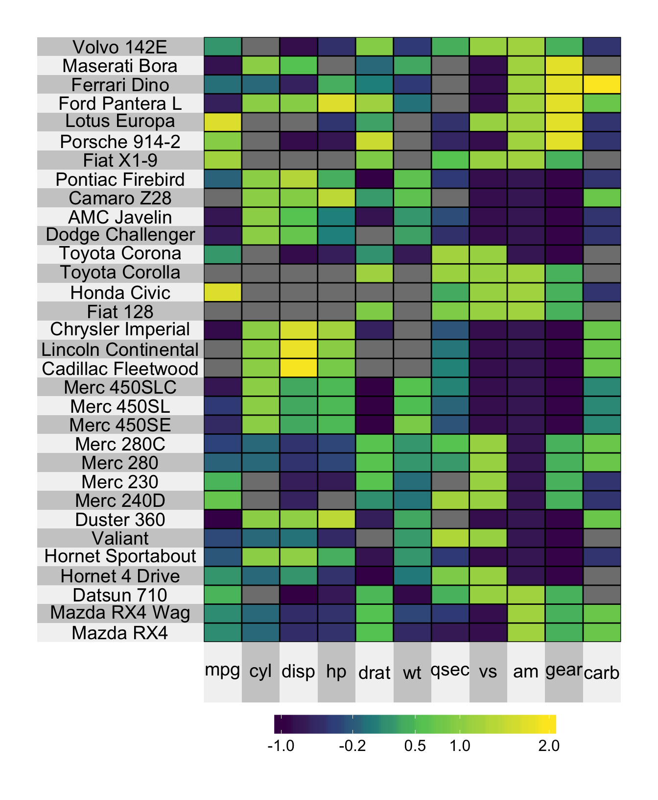

Chapter 4 Heatmap colormap
4.1 Heatmap Palette
The default color palette is the viridis color map generated by Nathaniel Smith and Stéfan van der Walt. If for some reason, however, you’d like to change the color palette of your heatmap, you’re in luck! Simply evoke one of the two following arguments:
heat.pal: if you’d like to make your own color palette, orheat.col.scheme: if you’d like to select a color palette from the set of inbuilt choices.
For example, if you’d like to use the red inbuilt color palette, you can set heat.col.scheme = "red":
superheat(mtcars,
# scale the matrix columns
scale = TRUE,
# change the color
heat.col.scheme = "red")
If you’d like your color palette to go from brown to purple by travelling through white, then you can simply set heat.pal = c("brown", "white", "purple") as follows
superheat(mtcars,
# scale the matrix columns
scale = TRUE,
# change the color (#b35806 = brown and #542788 = purple)
heat.pal = c("#b35806", "white", "#542788"))
4.2 Color transitions
Note that by default, the color transitions take place at the appropriate quantile based on the number of colors provided in the palette. For example, if you have 6 colors the color transitions will be at the 0th, 20th, 40th, 60th, 80th and 100th quantiles, where the 0th quantile corresponds to the minimum value and the 100th quantile corresponds to the maximum value. For skewed data, this means that most of the color transitions will occur towards one end of the scale.
To force the transition to occur at a particular location, you need to use the heat.pal.values argument. This argument takes a vector whose length is the same as heat.pal and specifies the position (within the range from 0 to 1) of each color. For example heat.pal.values = c(0, 0.5, 1) forces the first color to be at the minimum value, the second color to be exactly at the midpoint of the range (note: this is distinct from the median) and the last color to be at the maximum value.
superheat(mtcars,
# scale the matrix columns
scale = TRUE,
# change the color (#b35806 = brown and #542788 = purple)
heat.pal = c("#b35806", "white", "#542788"),
heat.pal.values = c(0, 0.5, 1))
4.3 Color limits
It is possible to specify the minimum and maximum value for which you would like your colormap to be defined using the heat.lim argument. For example, if I would like to display only values from -1 to 2, then I would set heat.lim = c(-1, 2). This means that
each value outside this range will be presented as missing (i.e. a grey cell corresponding to
NA), andthe first color in the color range will correspond to the value -1 and the last color in the color range will correspond to the value 2.
superheat(mtcars,
# scale the matrix columns
scale = TRUE,
heat.lim = c(-1, 2))
4.3.1 Extreme values
If you would prefer that values outside the heat.lim range be presented as the maximum/minimum color in the range (rather than as NA) then you can specify the argument extreme.values.na = FALSE.
superheat(mtcars,
# scale the matrix columns
scale = TRUE,
heat.lim = c(-1, 2),
extreme.values.na = FALSE)